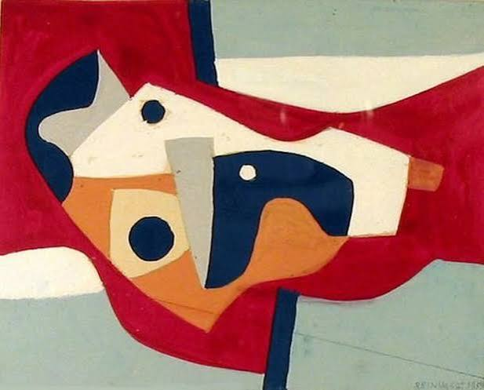
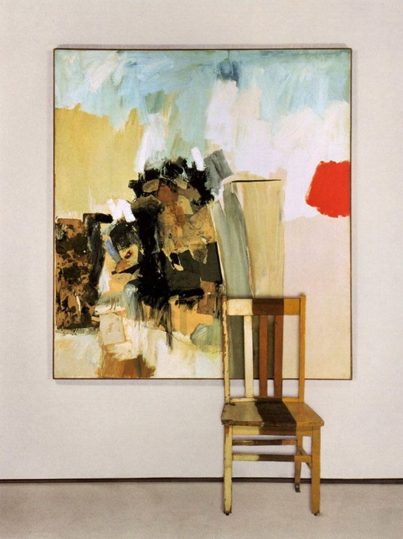
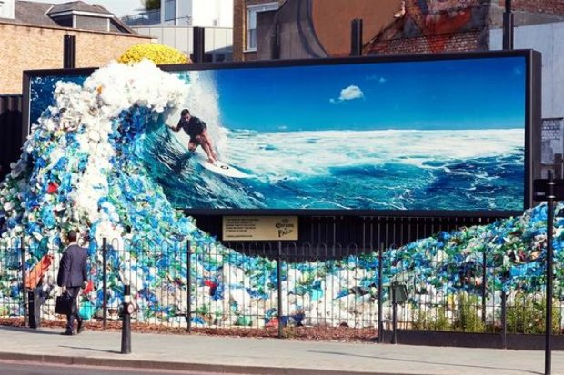
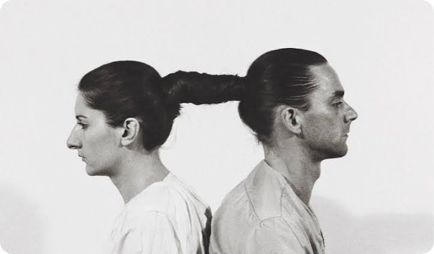
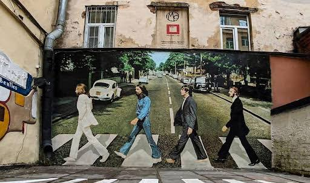
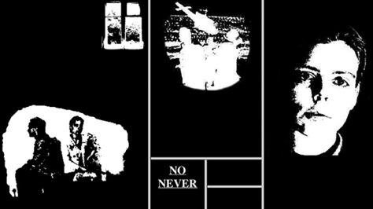
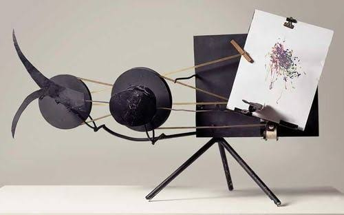
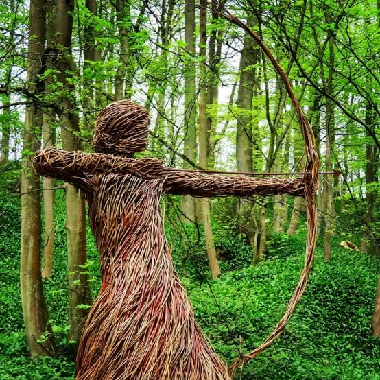
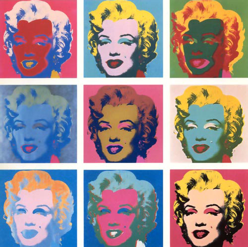
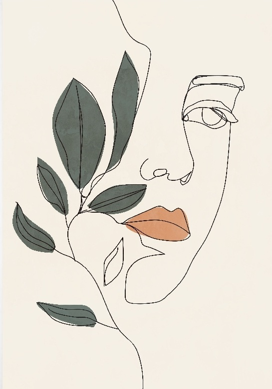

Искусство, которое задаёт вопросы
Современное искусство
Современное искусство не обязано быть "красивым" - оно хочет, чтобы вы остановились, задумались и спросили себя: "А что здесь, собственно, происходит?"
Что считать современным искусством

Обычно под современным искусством понимают работы, созданные во второй половине XX века и в наше время. Именно тогда художники окончательно перестали следовать единым правилам: живопись разошлась с реальностью, скульптура вышла из музейных залов, а в качестве материала стали использовать всё - от краски и холста до света, звука, мусора и даже собственного тела.
Главное отличие от классического искусства - смещение акцента. Если раньше ценность картины определялась мастерством изображения, то теперь на первый план выходит идея. Зритель перестаёт быть наблюдателем и становится участником: он входит в инсталляцию, нажимает кнопку, отражается в зеркальной комнате или просто достраивает смысл в собственной голове.
Не стоит бояться, если работа кажется непонятной. Современное искусство редко предлагает готовый ответ; чаще оно предлагает вопрос. Хорошая привычка - прочитать название и подпись, внимательно посмотреть на форму, цвет и масштаб, а затем честно ответить себе, какое чувство возникло. Иногда это раздражение, иногда смех, иногда восхищение - и всё это законные реакции.
Основные направления
Восемь путей, по которым двигалось искусство последних десятилетий. Нажмите на карточку, чтобы прочитать о направлении подробнее.

Концептуальное искусство
Идея важнее вещи: стул, его фотография и словарная статья.

Инсталляция
Пространство целиком становится произведением, зритель входит внутрь.

Перформанс и хеппенинг
Искусство-действие: здесь и сейчас, с участием тела и зрителей.

Стрит-арт
Искусство города: граффити, трафареты, муралы и наклейки.

Нет-арт
Искусство интернета: сайты, гипертекст и сетевые проекты.

Сайнс-арт
Союз науки и искусства: биология, физика, технологии.

Ленд-арт
Искусство земли: работы прямо в ландшафте.

Поп-арт
Реклама, комиксы и товары как материал для искусства.
Как смотреть и о чём думать

Одна из самых сильных идей XX века — цвет может быть самостоятельным героем. Большие плоскости насыщенного цвета действуют на зрителя почти физически: перед ними хочется постоять молча, как перед морем или закатом. Подобные работы не рассказывают историю, они создают состояние.
Другая идея — повседневность достойна внимания. Банка супа, комикс, рекламный плакат, кресло, фотография из газеты — всё это становилось материалом для картин и скульптур. Так искусство стирало границу между «высоким» и «обычным» и заставляло по-новому смотреть на мир, который мы видим каждый день и почти не замечаем.
Искусство не должно только отражать мир — оно должно показывать его так, как мы раньше не видели.— распространённая мысль в художественной критике ХХ века
На этом сайте вы найдёте галерею, статью с обзором направлений и раздел с лабораторными заданиями по веб-вёрстке, где искусство соединяется с кодом: рисунок и анимация сделаны только средствами CSS.